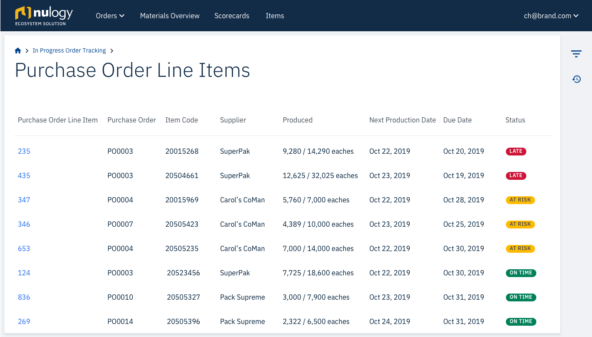
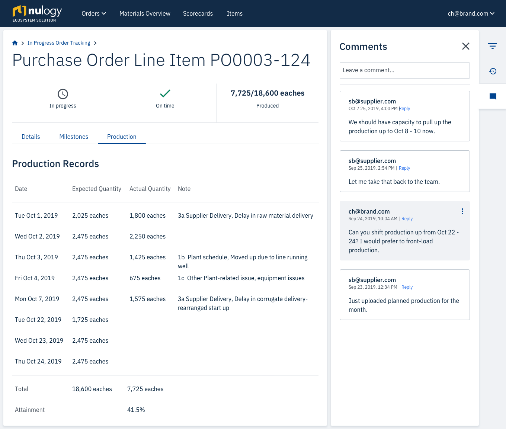

A Story of Strategic Partnership
This is the story of how I worked with a multi-billion dollar global manufacturing and marketing company for household, personal care and specialty products to deliver 3 key features in the span of three months.
The Director of Global Manufacturing Services on working with me:
About the Company
They are a leading CPG (consumer packaged goods) company best known for its 11 major brands in the household and personal care space. They have grown volume faster than other major players in the personal care space in the last four years.
+ more about the company
- less about the company
They have ambitious growth plans, including expanding in international markets and acquiring new brands. They anticipate outsourcing more production to co-manufacturers; therefore, enabling collaboration and visibility across their network is a key strategic initiative for them and one of the CEO’s top priority initiatives.
Project Significance
Having a platform for collaboration with suppliers is a key priority for the CEO. They are focused on the success of this project and we have all their attention. They have 90 co-manufacturers in their network, many of whom don’t have systems to connect and collaborate with this company. This is a community that represents a huge market opportunity for our solution.
The goal
Within the first 3 months of the project (October to December 2019) the goal was to connect 12 of their suppliers to the platform to enable visibility into supplier data, and have both brand and supplier using the existing features, as well as three new features yet to be developed:
Results
- Successfully onboarded 12 suppliers by the end of 2019
- Unlocked trust with our stakeholders, allowing me to run user testing and shadow their planners
- Continued partnership with the company
My role
I was the sole designer on the product team comprised of 6 developers, 1 agile tester and 1 product manager. I was responsible for designing Production Tracking, Materials Overview, and Scorecards in time for development and release by the end of December 2019.
Notable elements of this project
- 3 months to design and develop 3 key features
- Weekly validation with our main stakeholders and super users of the system
- Without trust in Nulogy built through an established track record of delivery, user testing was not possible within the first three months
Solutions
Production Tracking
Production Tracking gives brands visibility into the day to day production of their suppliers. With this visibility, brands can better track the progress of their orders and troubleshoot issues immediately as they arise.
Surface the most urgent information first
The table is by default sorted to surface the highest priority statuses first, so planners can identify the Purchase Order Line Items that require the most immediate action.
Provide visibility at the right level
Visibility into daily production records can be viewed on each Purchase Order Line Item.

Make it easy to collaborate
Planners can collaborate with suppliers on production plans on a per Line Item basis.
Materials Overview
Materials Overview gives brands visibility into where their material is located across their network, how much inventory is present, and helps brands reduce waste by surfacing which materials are at risk of expiry.
Optimize for action
At Risk, Expired and Good inventory is surfaced immediately, to allow users to act on the inventory as needed.
Build flexibility into viewing information
Users can filter to see inventory they care about, even down to the individual Item level.
Provide appropriate detail
When necessary, users can drill down to individual lot code and expiry data for inventory.
Scorecards
Materials Overview gives brands visibility into where their material is located across their network, how much inventory is present, and helps brands reduce waste by surfacing which materials are at risk of expiry.
Maximize visibility with real-time monitoring
Brands are able to track Inventory Levels, Weekly Schedule Attainment, Finished Goods Produced, and troubleshoot Attainment Issues. The graphs show the current date by default, so brands can track real-time performance.
Make it easy to focus
Brands can filter to see historical data and focus on the categories they care about.
Learnings
This project challenged me to work with customers in a much more collaborative way. The weekly calls kept me prepared to present my work at any point in the design process, and taught me how to take a deep understanding of our stakeholders’ needs and incorporate those into the design of features.
The biggest value that this partnership unlocked was access to their end users. Once we were able to deliver the features promised, we earned their trust and willingness to let me shadow their planners and run user testing with them on upcoming features. Our partnership continues to grow into 2020.